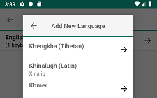
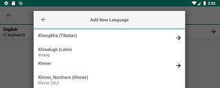

Adding New Keyboards
To add keyboards, follow these steps:
Step 1)
Open the menu for additional options. Select 'Settings'
Step 2)
From the Keyman Settings menu, select 'Installed languages'

Step 3)
From the 'Installed languages' menu, touch the + button in the bottom right corner of your screen.

Step 4)
A list of all available languages will appear. Scroll through this list until you find the language you want to install. Languages marked with a right arrow have multiple keyboards - for example we have 10+ different Tamil keyboards.
 
Select the language and keyboard you want to install - a popup will ask for confirmation, hit the Download button.


Step 5)
Once the download is complete, the new keyboard will be selected. Touch the ← button on the top left corner of the popup several times and the new keyboard will become active.


Alternate Step for System Keyboard)
The Keyman system keyboard has an additional CLOSE KEYMAN button at the bottom left of the "Keyboards" menu. Pushing this button will close Keyman and switch to the next non-Keyman system keyboard.